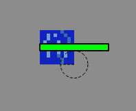

Sprint 6
Reducing performance issues (Nico)
While running the main game we experienced a significant amount of lag.
One reason was, that with every self.update() call of our window, we iterated through every tile to call the arena.
We changed the code, that the arena is drawn once and saved as a pixmap.
With every self.update() the arena is displayed now just by drawing the single pixmap.
Adding Robot to Robot Collision detection (Tom)
Since we don't want our robots to be able to drive through each other we extended our previous collision detection function to also take other robots into account.
We do this by giving each robot an array which conatins all other robots currently alive in the arena.

And then iterating over all other robots to check if we are intersecting with any of them. Since all of our robots will be of circular shape this is quite inexpensive.

Making collision detection much more efficient to combat lag(Tom)
We were Iterating over each point our robot was occupying using the loop below:
This was a terrible idea, with the current set up of tile size and robot radius we were iterating over the inner loop around 32000 times! This caused significant lag in our game.
Since we are only looking for tiles with collision != 0. Iterating in steps of 1 is oc course unneccesarry, because each tile is much larger than 1 pixel we would be checking each tile thouand of times.
Making our tiles larger than the Robots allowed us to go in steps of robot radius as seen below. Which means executing the inner loop less often.
Using this approach we were able to go from 32000 loop iterations to only 100-200.
Adding Tile Logic to our Game (Tom)
In our Game we have differnet kinds of Terrain, such as Fire, Water, Spikes and more. Each of these should have a specific effect on the players whenever they drive over them.
At first our robots were much bigger than our Tiles, meaning at any point the robot would be on multiple tiles at a time, so we opted to apply every effect of every Tile the Robot was currently on.
This was a bad Idea since its very hard to see which tiles you are actually on and the sum of all the effects can be quite overwhelming and even cancel eachother out, leading to very confusing behaviour.
We have since adjusted our Robots to be much smaller than the tiles, now we only ever apply the effect of one Tile!
Size of a Robot next to a Tile:

This had the nice side effects of making our collision detection faster since there are less tiles to check for collision and our reading of the Arena Text file has also gotten faster since it is smaller now.
How we apply effects of each Tile type currently:
The Move multiplier as seen above is then multiplied with our speed in the move function, resulting in slower or faster movement.

Looking for SFX and music for our Game(Tom)
We also want some basic sounds for our Game that are not going to get us into any legal trouble because of copoyright.
I own a license to all the pre selected sounds so we are in the clear as far as copyright goes. If you want to listen in, you can find all the preselected sounds under Art/Audio.